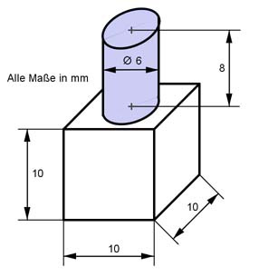
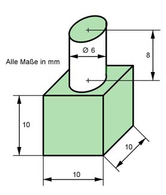

Aufgabe 40 Berechnen Sie das Volumen V und die Oberfläche O des dargestellten Körpers.

V = weißer Würfel + blauer Zylinder d = 6 mm --> r = d/2 = 6 mm/2 = 3 mm a = 10 mm V = a3 + п * r2 * h V = 10 mm * 10 mm * 10 mm + п * 33 mm2 * 8 mm V = 1 000 mm3 + 226,1 mm3 = 1 226,1 mm3
O = grüne Würfeloberfläche + + weiße Zylindermantelfläche O = 6 * a2 + 2 * п * r * h O = 6 * 102 mm2 + 2 * п * 3 mm * 8 mm O = 600 mm2 + 150,8 mm2 = 750,8 mm2